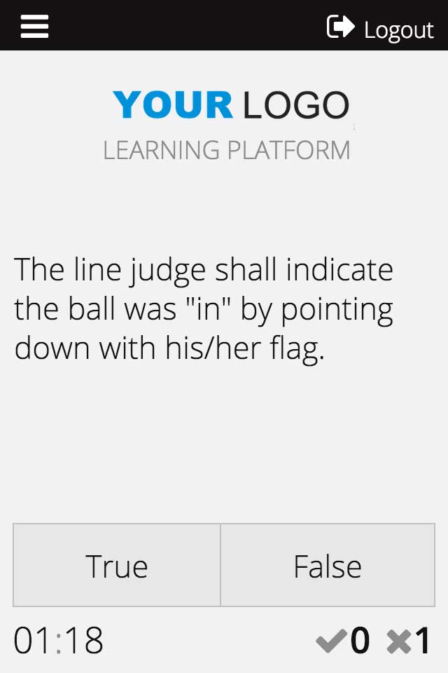

#MidCamp
I Wish I Knew This Three Years Ago /
Adam White
I Wish I Knew This Three Years Ago
Introducing site builders to Entity Metadata Wrappers, EntityFieldQuery and more
https://2015.midcamp.org/node/66
MidCamp 2015
#MidCamp
Adam White
@adamwhite
Upper Rapids
http://www.upperrapids.ca
Hello from Niagara!
We're Niagara, Canada's only dedicated Drupal development shop.
We're a small agency with a huge output, building sites without taking a breath since the last days of Drupal 6.
Us & Drupal
I was a Java developer left holding the keys to an in-house PHP-based CMS I didn't have a hand in building. Switching gears to Drupal allowed us to leverage a community of knowledge rather than just toil away on our hopefully-secure-because-it's-obscure code. It also accelerated things.
I've got to build tons of sites without a lot of time for introspection.
Hands Up
Nothing's stopping me so...
Drupal, as a framework, can best be though of as a set of guidelines for being awesome. Unfortunately there's plenty of room, with all of PHP at your fingertips, to be less so. For those of us in tiny teams there's often nobody calling us out on writing completely bananas code.
Case Study
 A few years back we helped a client rush out a prototype of a quiz-based e-learning app for professional referees. The client originally built it as an iPad app but his target audience wanted something on the web.
What we built worked great, but...
Case Study
Scores were saved directly to a MySQL database table using...
db_insert($table, array $options = array())While our individual questions were nodes, we retrieved our sets of questions using
views_get_view_result($name, $display_id = NULL)...which is sort of weird and had caching issues, but seemed logical given that in my site builder mindset "views = lists of stuff"
Prototype to Product
Every weird choice we made didn't seem to have any negative repercussion... so we made them.
Years later though the client returned having white-labelled his product and sold a number of them internationally. Suddenly we needed to take that old weird egg of a webapp and built it into a maintainable multilingual product we could build and maintain from an installation profile.
So let's do this right...
Re-building our quiz
While the in-game UI of the quiz will still be done in JavaScript we want to overhaul the guts of this system so that it's flexible, maintainable, and plays as nicely with Drupal's conventions as possible.
Everyone cool with Entities?
Querying Entities
Drupal 7 introduced EntityFieldQuery, a PHP class used for quickly building queries of entities and fields while abstracting any actual SQL.
We're going to use this in the function that generates our quiz questions instead of straight queries or Views.
Why Avoid Views?
- Interacting with Views programatically can be awkward
- Increased readability of our code as no logic was hidden away in the view
- It kept this core mechanic of our system out of the user space entirely
- One less big module needed
- We could handle our own caching
EntityFieldQuery
$query = new EntityFieldQuery();
$query
->entityCondition('entity_type', 'node')
->entityCondition('bundle', 'true_false_question')
->propertyCondition('status',1)
->propertyOrderBy('created', 'DESC')
->range(0,10);
Notice the lack of semicolons between method calls. Each EFQ method returns the same object the method was called on, so we can chain calls.
Returns
EntityFieldQuery returns the IDs of the found entities, keyed by entity type.
['node']
[123]
[125]
[126]
['user']
[34]
[36]
entityCondition
$query = new EntityFieldQuery();
$query
->entityCondition('entity_type', 'node')
->entityCondition('bundle', 'true_false_question')
->propertyCondition('status',1)
->propertyOrderBy('created', 'DESC')
->range(0,10);
The entityCondition method narrows down which type of entities you're querying, by both the type (nodes, users, taxonomy terms) and the bundle (content types for nodes). You can include more than one type of entity.
entityCondition
$query = new EntityFieldQuery();
$query
->entityCondition('entity_type', 'node')
->entityCondition('bundle',
array('true_false_question','multiple_choice_question'),
'IN')
->propertyCondition('status',1)
->propertyOrderBy('created', 'DESC')
->range(0,10);
For multiple conditions an array is used as the second parameter and an operator is needed.
propertyCondition
$query = new EntityFieldQuery();
$query
->entityCondition('entity_type', 'node')
->entityCondition('bundle', 'true_false_question')
->propertyCondition('status',1)
->propertyOrderBy('created', 'DESC')
->range(0,10);
Property conditions allow you to filter your results based on any column in the base table for the entity type. For nodes, this could be the published status, author, creation time, etc.
fieldCondition
$query = new EntityFieldQuery();
$query
->entityCondition('entity_type', 'node')
->entityCondition('bundle', 'true_false_question')
->propertyCondition('status',1)
->propertyOrderBy('created', 'DESC')
->fieldCondition('field_topic', 'tid', $topic)
->range(0,10);
Fields can also be used to filter your results, the method takes the Field Name (or array), a column name, and value to test against at a minimum. Optionally you can include an operator, delta group or language group.
Don't Mix Conditions
One limitation of EFQ is that it's not possible to query across multiple entity types. So you can't in a single query find "published nodes that were authored by users who were created in the last hour."
...that would be querying both node->status and user->created. However you can extend the query using hook_query_alter or hook_query_TAG_alter.
hook_query_TAG_alter
$query = new EntityFieldQuery();
$query
->entityCondition('entity_type', 'node')
->entityCondition('bundle', 'true_false_question')
->propertyCondition('status',1)
->addTag('random');
The addTag method allows you to hook into the query object which results from the EntityFieldQuery.
function MYMODULE_query_random_alter($query) {
$query->orderRandom();
}
hook_query_TAG_alter
$query = new EntityFieldQuery();
$query
->entityCondition('entity_type', 'node')
->entityCondition('bundle', 'true_false_question')
->propertyCondition('status',1)
->addTag('debug');
Tip: Use this for debugging too!
function MYMODULE_query_alter($query) {
if ($query->hasTag('debug') && module_exists('devel')) {
dpq($query);
}
}
Fixing our quiz
With EntityFieldQuery we're now retrieving our quiz questions in far less esoteric way.
What we want to do next is get away from storing our scores as straight data inserted into SQL. We want to make those into fielded Entities so we can leverage Drupal more.
Next, we need a module
Up until now we've been talking about stuff that's been part of the core entity API.
Entities were introduced late in the D7 development cycle, so it's an incomplete system. The Entity module fills out the gaps: CRUD, exportability, revisions, and...
Entity Metadata Wrapper
A wrapper classb> which makes dealing with entities and accessing property and field data much easier.
Your code, when using Metadata Wrappers, won't make your future self hate your current self. Let alone other people.
Arrays!
$value = $node->field_maximum_points[LANGUAGE_NONE][0]['value'];
This is scary but your code is full of them (well, mine was at least). Not only are you hard-coding the language into the field lookup, you're also going to start throwing PHP warnings when there's no data in that field.
Entity Metadata Wrapper
$wrapper = entity_metadata_wrapper('node', $node);
$value = $wrapper->field_maximum_points->value();
This, on the other hand, is lovely. I don't need to know if that field exists, I'm also no longer hard-coding the language. I can even load this value with just the NID for $node instead of a fully populated object.
EMW & Multi-Lingual
// whole wrapper
$w = entity_metadata_wrapper('node', $node, array('langcode' => 'en'));
// individual field
$w->language('de')->body->summary->value();
If you don't set it, the wrapper will use the default language, but you can set the language when you instantiate the class. Alternatively you can select language on a per-field or per-property basis.
Lazy Loading & Chaining
Think about having to do this...
$node = node_load($nid);
$author = user_load($node->uid);
$email = $author->mail;
Doing this the old way, I've had to load two entire entities from the database to get to that email address.
Lazy Loading & Chaining
...but with an Entity Metadata Wrapper:
$wrapper = entity_metadata_wrapper('node',$nid);
$email = $wrapper->author->mail->value();
With this method, the wrapper only needs to load as much as it needs to get to that email. This saves in database overhead and reads much cleaner.
$wrapper->author->mail = 'adam@upperrapids.ca';
$wrapper->save();
Populating an entity
$entity = entity_create('attempt', array('type' => 'attempt'));
$wrapper = entity_metadata_wrapper('attempt', $entity);
$wrapper->field_course->set($nid);
$wrapper->field_participant->set($user->uid);
$wrapper->field_finished->set($finished);
$wrapper->field_started->set($started);
$wrapper->field_correct->set($correct);
$wrapper->field_incorrect->set($incorrect);
$wrapper->save();
$createdId = $wrapper->getIdentifier();
Lists of items
foreach($wrapper->field_terms->getIterator() as $index => $term_wrapper) {
$termLabels[] = $term_wrapper->label->value();
}
// or ...
foreach ($wrapper->field_terms->value() as $index => $term_wrapper) {
$termLabels[] = $term_wrapper->label->value();
}
You can set list values in numerous ways:
$tids = array(12,34,55);
$wrapper->field_taxonomy_terms->set($tids);
// or...
$wrapper->field_taxonomy_terms[] = 77;
Exceptions
Entity Metadata Wrapper throws an EntityMetadataWrapperException if you make it angry, so it's good practice to use try...catch blocks when using it:
try {
$wrapper = entity_metadata_wrapper('node', $nid);
$courseCode = $wrapper->field_course->field_code->value();
}
catch (EntityMetadataWrapperException $exc) {
// panic and go hide in the woods
}
Inspecting wrappers
Entity Metadata Wrapper has a handy function called getPropertyInfo which will tell you which properties are available from a wrapper.
$wrapper = enitity_metadata_wrapper('user',$uid);
dpm($wrapper->getPropertyInfo());
What about Drupal 8?
While entities were introduced to D7 late in the development cycle, in D8 they're core to the system. Everything's been overhauled and extended, so the Entity module as it is today will likely not be needed.
Entities in D8
Entities in D8 are now typed classes with methods, some are generic:
$entity->id():
Others have entity-type specific methods defined in the interfaces:
$node->getTitle();
Handlers
Entities in D8 are supported by handlers.
A storage handler supports loading, saving and deleting entities, as well as revisions, translations and configurable fields.
Separate handlers handle things like access control, viewing entities, listing, forms, etc.
What you'd expect!
The sensible way that you'd expect to access information in an object oriented framework is what we're shooting for in D8, and it should make custom code appear far less esoterically Drupally.
$entity = entity_load('node', $nid)
$entity->greatest_band_ever_field->value = "The Clash";
$entity->save();
No more EntityFieldQuery
Replacing it is an entity.query service that will instantiate a query object for a given entity type.
$entity_query_service = $container->get('entity.query');
$query = $entity_query_service->get('node');
->condition('status', 1)
->condition('changed', REQUEST_TIME, '<')
->condition('title', 'cat', 'CONTAINS')
->condition('field_tags.entity.name', 'cats');
$nids = $query->execute();
Drupal North
June 25-28 @ in Toronto
The 1st annual regional summit in the Ontario-Quebec corridor (2016 Montreal, 2017 Ottawa). 500+ in attendance for sprints, sessions, training. Think BADCamp with maple syrup.
#DrupalNorth
Sprint Sunday
UIC Student Center East Tower, Room 605
http://2015.midcamp.org/schedule
Learn through contribution
Contributors of all skill sets and levels are welcome and encouraged.